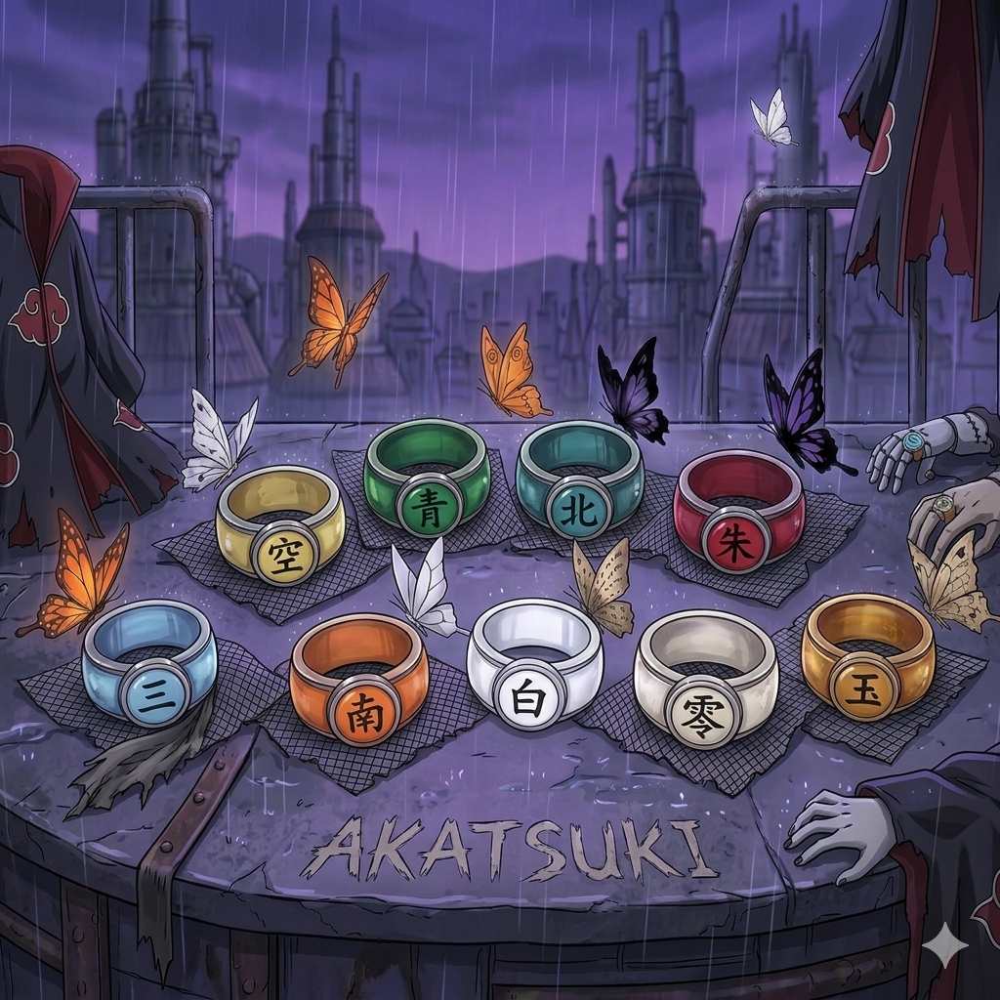
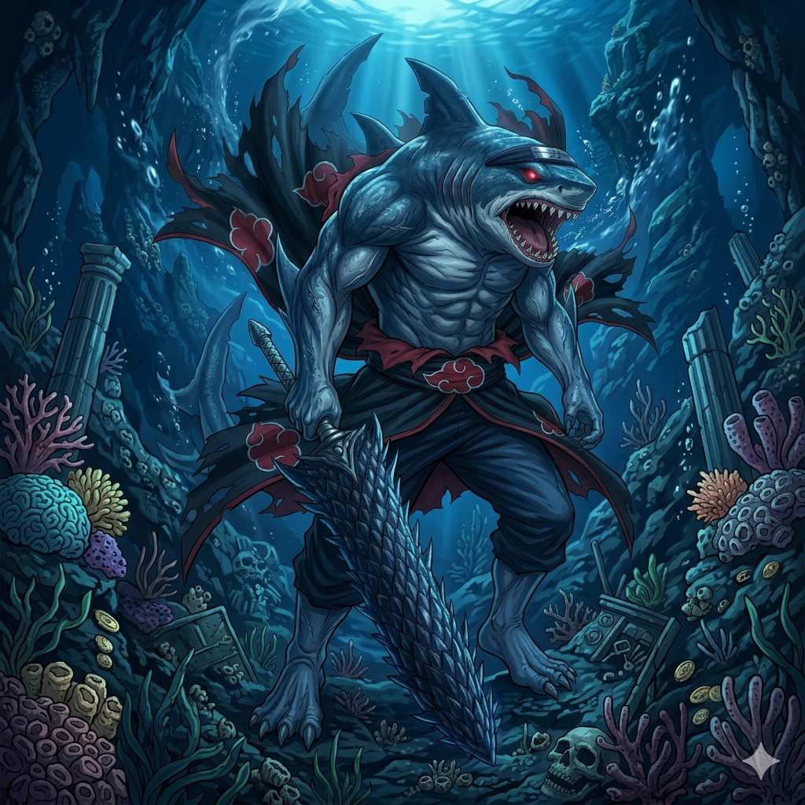

Bem-vindo à Wiki da Akatsuki

Explore o mundo sombrio e fascinante da Akatsuki, a organização de ninjas renegados mais temida do universo de Naruto. Descubra os segredos, membros e histórias por trás dessa enigmática facção.
A Origem da Akatsuki
Uma história de esperança, traição e decepção que moldou a mais temida organização ninja
A Vila da Chuva - De Amegakure
Tudo começou na desolada vila de Amegakure, constantemente destruída por guerras entre outras vilas. Aqui vivia um jovem ninja chamado Nagato, portador do lendário Rinnegan.
O Encontro Fatídico
Nagato conhece dois companheiros ideológicos: Yahiko, um jovem ambicioso, e Konan, a única mulher entre eles. Juntos, sonhavam com paz verdadeira para o mundo ninja.
Pilar - Yahiko
Yahiko se torna o rosto público da organização, enquanto Nagato trabalha nos bastidores manipulando os jutsus para oferecer poder supremo. Era um equilíbrio perfeito.
A Traição - Morte de Yahiko
O regime de Hanzou da Chuva intercepta a Akatsuki. Yahiko é forçado a se impalar pela lâmina de Nagato em um sacrifício devastador. Assim nasceu a verdadeira organização.
A Transformação - Pain Nasce
Nagato, agora quebrantado, usa jutsu proibido para ressuscitar Yahiko, transformando-o num corpo de verdade controlado. Ele se torna Pain, o deus da Akatsuki.
A Colheita de Ninjas
A Akatsuki evolui de uma organização pacifista para uma máquina de guerra, recrutando os ninjas mais perigosos do mundo. Duplas estratégicas são formadas para dominar.
Os Três Fundadores

Nagato (Pain)
O Portador do RinneganO gênio oculto por trás da Akatsuki. Nagato visualizava um mundo onde a dor traz paz. Seu poder Rinnegan revolucionou a organização.

Konan
A Guardiã da ChuvaÚnica mulher fundadora, Konan permaneceu leal ao lado de Nagato mesmo após a morte de Yahiko. Sua fidelidade definia a verdadeira Akatsuki.

Yahiko
O Sonho que se DesvaneceuO jovem visionário cuja morte marcou o ponto de virada. Seu sacrifício transformou ideais pacíficos em poder absolutista e busca por dominação.
O Manipulador nas Sombras
Enquanto Pain liderava publicamente, uma força ainda mais antiga operava nos bastidores: Madara Uchiha, o ninja lendário que deveria estar morto há séculos.
Através de Obito (Tobi), Madara canalizava seus planos através da Akatsuki, transformando-a numa ferramenta para seu verdadeiro objetivo: o Plano do Olho da Lua.
A verdade? A Akatsuki nunca foi totalmente autônoma. Era um jogo dentro de um jogo, histórias dentro de histórias.
Membros da Akatsuki
A Akatsuki é composta por um grupo de ninjas renegados, cada um com habilidades únicas e especializadas sob a liderança de Pain.
Itachi Uchiha
O Gênio Uchiha
Mestre do Sharingan e estrategista brilhante, Itachi é conhecido por seu genjutsu devastador e sua presença enigmática na Akatsuki.
Ficha Criminal
O Gênio UchihaMadara Uchiha
O Lendário Guerreiro
Ficha Criminal
O Lendário GuerreiroPain (Nagato)
O Líder Absoluto
Líder da Akatsuki e portador do lendário Rinnegan.
Ficha Criminal
O Líder AbsolutoKonan
A Anjo de Deus
Mestra na manipulação de papéis e explosivos.
Ficha Criminal
A Anjo de DeusKisame Hoshigaki
A Besta Sem Cauda
Um dos 7 Espadachins da Névoa e portador da Samehada.
Ficha Criminal
A Besta Sem CaudaDeidara
O Artista da Explosão
A arte é o estouro! Especialista em argila explosiva.
Ficha Criminal
O Artista da ExplosãoHidan
O Imortal Religioso
Seguidor fiel de Jashin e tecnicamente imortal.
Ficha Criminal
O Imortal ReligiosoKakuzu
O Coração Eterno
Tesoureiro da Akatsuki que possui 5 corações.
Ficha Criminal
O Coração EternoTobi (Obito)
O Manipulador Oculto
Usuário do Mangekyō Sharingan e arquiteto do plano supremo.
Ficha Criminal
O Manipulador OcultoDuplas da Akatsuki
As duplas mais temidas do mundo ninja, com sinergias únicas e missões lendárias. Clique para descobrir curiosidades e detalhes de cada parceria!
Itachi & Kisame
A Névoa Silenciosa
Hidan & Kakuzu
Imortais Mercenários

Deidara & Sasori
Arte Explosiva
Pain & Konan
Deuses da ChuvaObjetivos da Akatsuki
Os planos ambiciosos que movem a organização em direção ao domínio absoluto
Capturar os Bijuus
O Nucleo da Estratégia
Coletar os nove espíritos de cauda (Bijuus) para criar a Arma Definitiva. Uma operação de longa duração que define todas as ações da Akatsuki.
Arma Definitiva
O Poder Supremo
Combinar todos os Bijuus em um único ser capaz de conquistar o mundo. Com este poder, nenhuma vila pode resistir.
Eliminar Adversários
Limpeza Necessária
Remover obstáculos no caminho para o poder absoluto. Ninjas fortes, vilas hostis e aliados inúteis serão neutralizados.
Nova Ordem Mundial
Remodelando o Mundo
Estabelecer uma nova ordem mundi baseada no poder da Akatsuki. Um mundo onde a paz é imposta pela força absoluta.
Dominar Informações
Redes e Inteligência
Expandir a rede de espiões e informantes. Conhecimento é poder, e a Akatsuki colheciona segredos de todas as vilas.
Imortalidade Perfeita
Transcendência Ninja
Descobrir ou criar o método final para imortalidade. Líderes como Pain e Itachi buscam transcender a morte e fraqueza.
Visão Final da Akatsuki
"Um mundo onde a paz é imposta pelo poder absoluto. Onde a fraqueza não existe. Onde cada pessoa compreende o sofrimento e a dor, aceitando-os como destino inevitavel. Isso é o paraíso que a Akatsuki construirá."
— Pain, Líder da AkatsukiRanking de Poderes
Os ninjas mais poderosos da Akatsuki, classificados por sua capacidade de combate e domínio de técnicas especializadas
Análise Geral de Poder
Poder Máximo
100
Pain (Rinnegan)
Elite S+
3
Portadores de Ningenkai Fōma
Poder Médio
89%
Equipe Núcleo da Akatsuki
Imortalidade
44%
Membros com Habilidades de Reconexão
Quiz da Akatsuki
Teste seus conhecimentos sobre a organização mais temida do mundo ninja
Você conhece a Akatsuki?
8 perguntas — cada resposta certa vale 1 ponto
Comparador de Membros
Selecione dois membros e compare seus poderes lado a lado
Curiosidades da Akatsuki
Segredos, fatos intrigantes e revelações que definem a organização mais temida do mundo ninja

Os Anéis Sagrados
Cada membro usa um anel especial com um caractere único.
Os dez anéis da Akatsuki não são apenas símbolos — são artefatos sagrados. Cada anel corresponde a um caractere do alfabeto japonês (Kanji), criando um sistema de identificação perfeito.
Tobi - Mistério
Quem realmente é aquele palhaço?
▼ Clique para revelar ▼
A Verdade
Tobi é Obito Uchiha, um ninja que "morreu" durante uma missão. Salvo por Madara, ele orquestrou os principais eventos da série e é o verdadeiro arquiteto do Plano do Olho da Lua.
Evolução do Poder
Por Números
Kisame

"Monstro da Névoa" - Lenda viva da Akatsuki
Guerreiro aquático implacável com a espada viva Samehada. Absorve chakra dos inimigos, tornando-o imbatível em água.
Hierarquia
Detalhes
Konan - O Coração
Konan foi subavaliada por anos, mas sua luta contra Madara com uma explosão de 10 minutos provou sua dignidade. Konan é o coração emocional da Akatsuki, não Pain. Seu sacrifício mostra que amor e compromisso valem mais que poder bruto.
O Legado
A Akatsuki não é apenas uma organização de vilões — é uma tragédia épica sobre indivíduos quebrados pelo sofrimento que buscavam mudar o mundo. Seus objetivos podem ser criticáveis, mas suas motivações são profundamente humanas, tornando o grupo uma das facções mais bem desenvolvidas do anime.